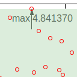
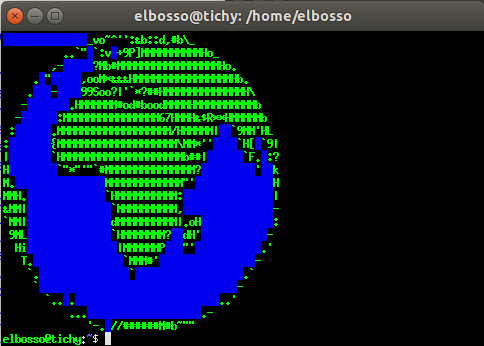

Linux
Alles zum Thema Gnu Linux
Es gibt wieder Zuwachs in meinem Docker-Zoo:
Ich berichtete neulich über die Installation und erste Tests von Keycloak. Nun bin ich tiefer eingetaucht und habe die diversen Möglichkeiten untersucht, die Authentifizierung mittels zweiten Faktors sicherer zu machen.
Ich habe nun endlich alle Docker-Container auf HTTPS ungestellt...
Traceroute Visualisierung mittels GeoJSON
29.05.2021

Dieses Wochenende war es wieder einmal an der Zeit für ein Kaninchenbau-Projekt. Es gibt inzwischen einige kostenlose Geolocation-APIs im Netz und ich wurde - durch das Internet - auf die Idee gebracht, das Ergebnis eines Aufrufs von traceroute auf einer Landkarte zu visualisieren
Gnuplot und Statistik
26.05.2021

Ich bin neulich bei Mastodon über eine Anfrage gestolpert, wie man online schnell eine graphische Darstellung statistischer Daten mit Mittelwert usw. anfertigen könnte. Ich gab dazu einige Suchparameter ergänzt um den Schlüsselbegriff "Gnuplot" ein und fand sofort einen Artikel, der erklärte, wie man das angefragte Szenario mittels Gnuplot umsetzen könnte.

Einige Links zu Informationen rund um den Berkeley Packet Filter im Linux Kernel...

Ich bin während des verlängerten Wochenendes auf eine Konferenz bzw. deren Abbildung im Internet gestoßen, die mir bisher noch unbekannt war. Ich war aber sofort gefesselt von einigen der Videos - was deren Inhalt, aber ganz besonders auch die Art und Weise der Präsentation der Vortragenden anging!
Asciiart Animationen
03.05.2021

Eine kleine Demonstration der Vergangenheit...
Linux Linkdump 2021 I
18.04.2021
Ein Linkdump rund um Linux (Container, Virtualisierung,...)
xBrowserSync in Docker
29.03.2021

Nachdem ich schon längere Zeit nicht mehr über neue Dienste in meinem Docker-Zoo berichtet habe, habe ich in der vergangenen Woche wieder einmal einen Neuzugang begrüßen dürfen...
Ältere Artikel
Hier geht es zum Archiv der Artikel, die vor dem 14.03.2021 verfasst wurden:
- s3storagefrontend Version 1.3.0
- Android-Gerät als Second Screen unter Linux
- ...


Tags
Android Basteln C und C++ Chaos Datenbanken Docker dWb+ ESP Wifi Garten Geo Git(lab|hub) Go GUI Gui Hardware Java Jupyter Komponenten Links Linux Markdown Markup Music Numerik PKI-X.509-CA Python QBrowser Rants Raspi Revisited Security Software-Test sQLshell TeleGrafana Verschiedenes Video Virtualisierung Windows Upcoming...
Manche nennen es Blog, manche Web-Seite - ich schreibe hier hin und wieder über meine Erlebnisse, Rückschläge und Erleuchtungen bei meinen Hobbies.
Wer daran teilhaben und eventuell sogar davon profitieren möchte, muß damit leben, daß ich hin und wieder kleine Ausflüge in Bereiche mache, die nichts mit IT, Administration oder Softwareentwicklung zu tun haben.
Ich wünsche allen Lesern viel Spaß und hin und wieder einen kleinen AHA!-Effekt...
PS: Meine öffentlichen GitHub-Repositories findet man hier - meine öffentlichen GitLab-Repositories finden sich dagegen hier.